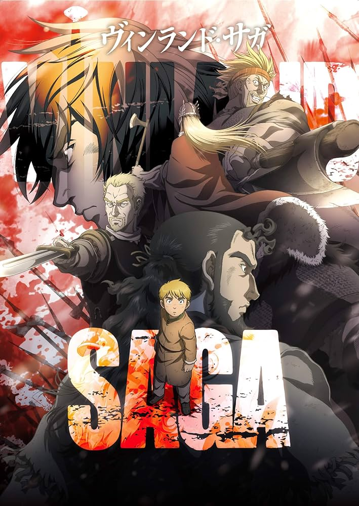

SEINEN
In Japanese, the word seinen means "youth", but the term "seinen manga" is also used to describe the target audience of magazines like Weekly Manga Times and Weekly Manga Goraku, which write on topics of interest to male university students and workingmen.

Set in a world where humans live in constant fear of ghouls - superpowered humanoid beings who feed on human flesh to survive, a shy college student named Kaneki Ken, who is nearly killed in an attack by one of these monsters, becomes a half-ghoul himself after receiving an organ transplant from the ghoul.

. The story is a dramatization of the story of Thorfinn Karlsefni and his expedition to find Vinland, with the majority of the story covering his fictional counterpart's transition from a bloodthirsty, revenge-filled teenager into a pacifistic young man; juxtaposed against this is the rise to power of King Canute, the journey of his own counterpart directly contrasting with that of Thorfinn's.
In Tokyo, a disaffected high school student named Light Yagami finds the "Death Note", a mysterious black notebook with rules that can end anyone's life in seconds as long as the writer knows both the target's true name and face.
The series follows Shinichi Izumi, a high school senior who is the victim of a failed attempt by a parasitic organism to take over his brain. The parasite, Migi, instead infects and takes over his arm, and both are forced in a peculiar partnership to fight other parasites.